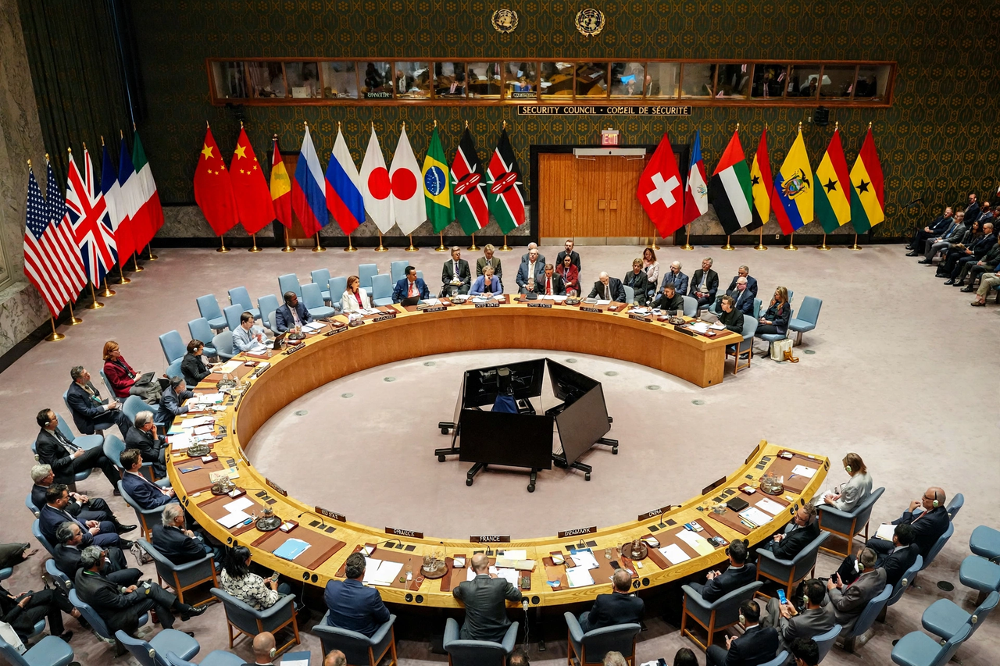

The permanent members of the United Nations Security Council (also known as the Permanent Five, Big Five, or P5) are the five sovereign states granted a permanent seat on the UN Security Council by the UN Charter of 1945: China, France, Russia, the United Kingdom, and the United States.
Each permanent member holds the power of veto over any substantive Security Council resolution. If any one of them casts a negative vote, the resolution fails, regardless of the support of the other members. This "great power unanimity" rule was designed to ensure the organisation's founding great powers would remain within it.
The P5 were the principal victorious powers of the Second World War. The Republic of China was an original member; its seat was taken over by the People's Republic of China in 1971. The Soviet Union's seat passed to the Russian Federation in 1991. The Security Council also has ten elected members serving two-year terms.
There have been repeated proposals to expand the permanent membership — advanced by the G4 nations (Brazil, Germany, India, Japan) and the African Union, among others — and periodic criticism of the veto's use, including calls for veto restraint in cases of mass atrocities. No reform has yet been agreed.